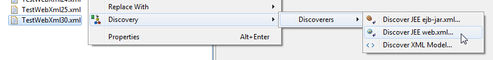
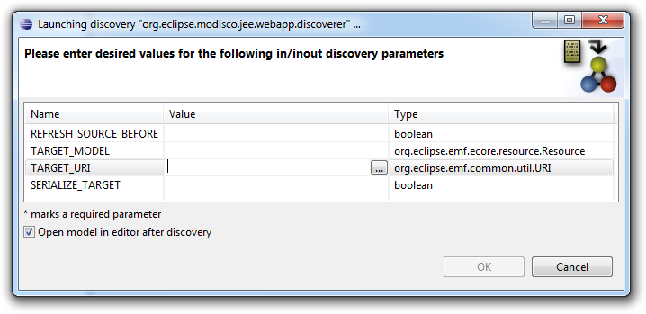
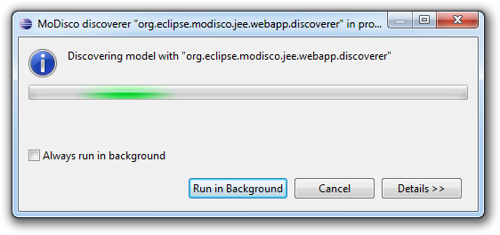
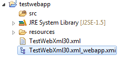
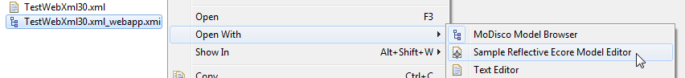

The goal of the Generic Web Xml Discoverer plug-in is to allow generic extractions of information from a Web.xml file, without the need for a metamodel dedicated to a conforming Document Type Definition (DTD) or XML Schema Description (XSD).
Quality disclaimer: this WebApp Discoverer was tested on many files, both well-formed and not well-formed.
Considering Web.xml files conforming to a DTD or XSD, it would be more convenient to have dedicated metamodels to manipulate the information. However, the generic XML Discoverer is an alternative for miscellaneous XML files.
This plug-in aims at analyzing any Web.xml file by providing a model describing the information found. The supported versions are JEE 1.2, 1.3, 1.4, 5 and 6.
Moreover, it allows to serialize the xml file back from the model. Thus, some M2M transformation might be used jointly to upgrade some xml files.
The plug-in provides the user a contextual menu to easily create models.
To discover a Web XML configuration file, right-click on it in the Eclipse Package Explorer view, and select Discovery > Discoverers > Discover JEE web.xml:

A discovery parameters dialog opens to let you specify the parameters of the discovery:

Once launched, a progress dialog will appear as soon as the operation begins. Depending on the size of your application, the reverse engineering process might take some time to complete:

At the end of the process, the newly created model file is added to the root of your project if you set SERIALIZE_TARGET to true:

And the model is opened in the default model browser if you selected Open model in editor after discovery:
The Web XML XMI files (with a filename ending in ".xml_webapp.xmi" by convention) can be opened in any model browser:
